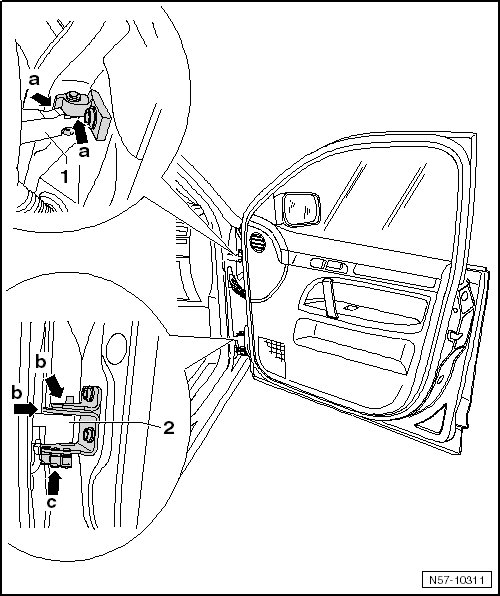

New Door Hinges, Lubricating
Front Door
New Door Hinges, Lubricating
• Lubricate the new door hinge after the painting is completed.

- Lubricate the upper door hinge - 1 - with lithium grease (G 000 150) all the way around - arrows a - on the pin and hole.
- Lubricate the lower door hinge - 2 - with lithium grease (G 000 150) all the way around - arrows a - on the pin and hole.
- Lubricate the door check torsion spring - 3 - on the lower hinge with lithium grease (G 000 150) - arrows c -.